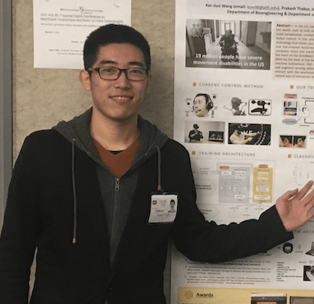

I am a Ph.D. candidate in the Department of Electrical and Computer Engineering at Carnegie Mellon University since spring 2020. At CMU, I am affiliated with the CyLab Security & Privacy Institute and advised by Prof. Marios Savvides. I obtained my M.S. degree from the Department of Electrical and Computer Engineering at PITT in 2018, under the advicement of Prof. Zhi-Hong Mao. I got my B.E. degree in Electrical Engineering and Automation at NCEPU in 2017.
My research interest lies in deep learning and computer vision, with a focus on multimodal large language model and open-world scene understanding. I am lucky to have opportunities to work with Ker-Jiun Wang, Yutong Zheng, Dipan Pal, Raied Aljadaany, and Chenchen Zhu.
Ph.D. Student
Jan. 2020 - Present

Research Intern (Intelligent Creation-Vision and Graphics)
May. 2024 - Aug. 2024
Research Associate, Jan. 2019 - Nov. 2019
M.S.
Aug. 2017 - Dec. 2018
B.E.
Sept. 2013 - May. 2017